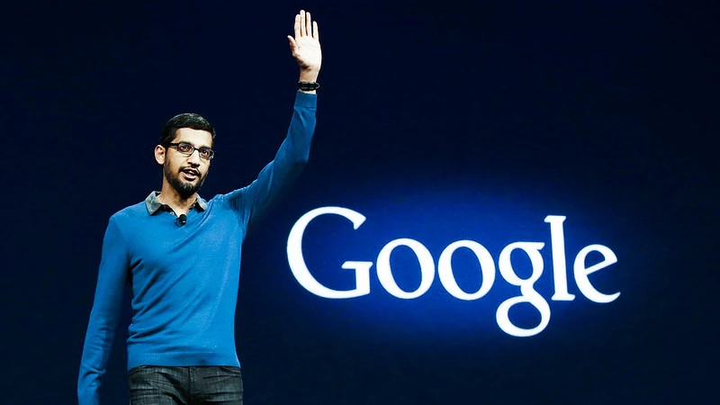

Sundhar Pichai

An Indian-born American executive who was CEO of both Google, Inc. (2015), and its holding company, Alphabet Inc. significant contributions to Google, such as his involvement in the development of the Chrome browser
About the Legend
- Pichai Sundararajan (born June 10, 1972), better known as Sundar Pichai is an Indian-born American business executive. He is the chief executive officer (CEO) of Alphabet Inc. and its subsidiary Google.
-
Pichai began his career as a materials engineer. Following a short stint at the management consulting firm McKinsey & Co., Pichai joined Google in 2004,where he led the product management and innovation efforts for a suite of Google's client software products, including Google Chrome and ChromeOS, as well as being largely responsible for Google Drive.
-
In addition, he went on to oversee the development of other applications such as Gmail and Google Maps. In 2010, Pichai also announced the open-sourcing of the new video codec VP8 by Google and introduced the new video format, WebM.
-
Pichai was selected to become the next CEO of Google on August 10, 2015, after previously being appointed Product Chief by the then CEO Larry Page.
-
Pichai worked in engineering and product management at Applied Materials and in management consulting at McKinsey & Company.Pichai joined Google in 2004, where he led the product management and innovation efforts for a suite of Google's client software products, including Google Chrome and ChromeOS, as well as being largely responsible for Google Drive
-
He went on to oversee the development of other applications such as Gmail and Google Maps.On November 19, 2009, Pichai gave a demonstration of ChromeOS; the Chromebook was released for trial and testing in 2011, and released to the public in 2012
-
On March 13, 2013, Pichai added Android to the list of Google products that he oversaw. Android was formerly managed by Andy Rubin,who was a director of Jive Software from April 2011 to July 30, 2013.Pichai was selected to become the next CEO of Google on August 10, 2015after previously being appointed Product Chief by CEO, Larry Page.
-
Pichai had been suggested as a contender for Microsoft's CEO in 2014, a position that was eventually given to Satya Nadella.In August 2017, Pichai drew publicity for firing a Google employee who wrote a ten-page manifesto criticizing the company's pro-diversity policies.
For more information, check out Sundar Pichai on Wikipedia. [ Developed by @ Sushant Gaurav. ]